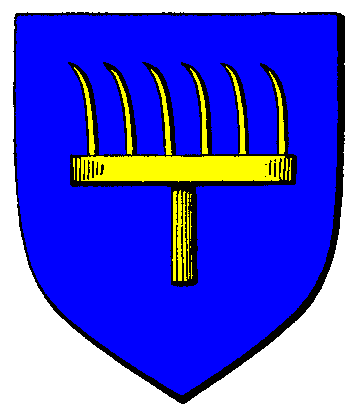

|

|
Das schwarze Brett
|
|
| Übersicht,
Anschläge und Stammtisch (RPG) |
|
Tura Lügner (1  ) )
|
| Knuffel Flammenhaar (RIP) |
Richtigstellung !
Der Tura Konvent hat mich verketzert weil ich angeblich von irgendwelchen Sklaven gewußt haben soll die in einem Gebäude gelagert waren das sich auf meinem Nationsgebiet befand.
Weder hab ich gewußt das sich dort Sklaven befinden, noch fühle ich mich verpflichtet mehrmals täglich alle Gebäude zu überprüfen.
Da ich vor dem angeblichen Sklavenhalter und sogar länger als er verketzert wurde, bleibt für mich nur ein Grund über. Der wahre Grund ist der momentane Angriff des Frostbundes auf meine Stadt. Hier wurden nun Die Glaubenskrieger in einem rein weltlichen Kponflikt eingesetzt um mich weiter unter Druck zu setzen.
Nun besitzt Kittin Silberfang auch noch die Frechheit der Urvankonvent würde Sklavenhaltung unterstützen. In welchem Zusammenhang bitte schön ? Ich habe nie Sklaven besessen, bin auch nicht deshalb verketzert worden.
Hiermit ist von meiner Seite aus alles gesagt.
Möge mich Urvan, der Gott der Gerechtigkeit, auch weiter auf meinem Weg führen.
Baron Knuffel Flammenhaar,
Vorsteher von Adlerhort,
Anführer der glorreichen Nation "Krieger des Lichtes",
Hüter des Hortes
Zur 1. Stunde am 4.Saatmond im Jahre 450 |
13.03.12 22:54
|
|
Galaton Dragus
  |
Ich glaube eher, Urvan würde Dir höchstpersönlich mit dem Schwert der Gerechtigkeit den Kopf abhacken für deine Lügen! Ich selbst habe die Sklaven gesehen, und es war nicht nur ein anderes Gebäude. Aber stellvertretend für das Rattennest dem du da vorstehst, trifft dich als verantwortlicher Bürgermeister, der aus diesen Gebäuden beliefert wurde, und dort Tag ein Tag aus verweiltest, ohnehin die Strafe Turas zurecht. Wenn ich auch nur ein Fünkchen Hoffnung in meinen eigenen Konvent hätte, hätte ich die Sklaven persönlich abgeliefert, so trifft dich eben nur der Zorn Turas.
Ob du dich verpflichtet fühlst, oder hier sonstigen Schund verbreitest, als dein ganz spezieller Feind sage ich Dir nur eines, deinen Worten wird in dieser Geschichte ebensowenig beigemessen wie wahrscheinlich meinen, aber steh verdammt nochmal aufrecht vor Urvan!
Graf Galaton Dragus,
Vorsteher von Kristallhafen,
Ehemann der reizenden Tonja Dragus
Zur 5. Stunde am 4.Saatmond im Jahre 450 |
13.03.12 23:55
|
|
Markus Feuernacht
  |
Ach ihr hättet also Sklaven abgeliefert? Nun das nenne ich mal eine sehr offene wenn auch gewagte Äußerung.
Es ist schändlich und falsch freie Wesen zu Versklaven und durch dessen Ankauf dafür einen Anreiz zu schaffen.
Nun aber wer macht sich Schuldiger, jener der Sie "Kauft" oder jemand der sie durch Gewalt ihrem Heim, ihnen Kindern und ihrem freien willen und Leben entreißt? Der Akt der Gewalt geht wohl erst mal von letzten aus, ob sie Sklaven dann vom "Käufer" freigelassen werden um die Sklavenjäger zu enttarnen sei dahin gestellt.
Jeder der Menschen Jagt und Versklavt Versündigt sich, also Graf, wollt ihr euch so Versündigen?
Weiser Markus Feuernacht,
Vorsteher von Shambhala,
Ehemann der reizenden Lupina,
Minister für Wirtschaft und Planung
Zur 13. Stunde am 4.Saatmond im Jahre 450 |
14.03.12 1:38
|
|
| Mawitti de Leik (RIP) |
Erst denken dann reden "Weiser" Feuernacht es geht hier um Sklaven die gewaltsam aus einem Gebäude befreit werden mussten nicht um Sklavenhandel.
Das Ihr hier versucht den ehrenwerten Grafen Dragus als Sklavenjäger darzustellen ist mehr als lächerlich der Baron Flammenhaar scheint ja ganz offensichtlich kein Sklave zu sein.
Baronesse Mawitti de Leik,
Vorsteherin von Galopiandros,
Anführerin der glorreichen Nation "Siegel des Nordwindes"
Zur 12. Stunde am 5.Saatmond im Jahre 450 |
14.03.12 7:12
|
|
Kantar
 |
Da ich Kantar wohl der Schuldige bin an der ganzen Aufruhr, möchte ich hier mal etwas Licht ins Dunkel bringen.
Ich hatte dieser Tage in einer verlassenen Burg von Nationsmitglied Xerva stimmen gehört und bin darufhin nachschauen gegangen als ich 26 Arme Geschöpfe darin vorfand ,halb verhunger und verdurstet nahm ich sie mit und habe sie in meinem Magierturm wo genügend Platz vorhanden so wie ein Heiler vor Ort einquatiert. Es bestand die Möglichkeit für jeden Frei zu gehn wohin er wollte.
Als des Nachts die Frostnation in das Gebiet eingefallen ist um an ihren Kriegsgegner Knuffel Flammenhaar zu gelangen.Plünderten sie auf diesem Weg meinen Magierturm , und fanden die Armen Leute darin vor was nun logischerweise zur Annahme schließen lies das ich sie versklavt hätte.Hätten sie um Einlass gefragt wären sie ohne weiters ins Gebiet gelangt.Händler sind und bleiben Neutral.
Nun ja ich werde dann zum Feind Turas ohne das Irgendjemand die Verhältnisse nachgefragt hätte.
Aber ich ertrage mein Schicksal und sehe es als Führung der Lichtsieben und das nächste mal werde ich sogleich einen höhren Lichtsiebenpriester verständigen um sollche Missverständnisse auszuräumen.
Xerva ist leider nicht zu gegen um sie zur Rede zu stellen sobald ich sie erwische wird das geschehen.
Was ich jedoch nicht verstehe ist das die Frostnation gemeinsam mit dem größten Sklavenhänder der Scherbe "Valendor Cascus" gemeinsam auf der Insel Corona lebt und nicht einmal behelligt wird von Tura ,wo doch Tura"so erzählt man sich auf der Scherbe) fest in der Hand der Legion des Frostes sein soll.
Es verbleibt
Markgraf Kantar,
Vorsteher von Monte Christo,
Anführer der glorreichen Nation "Händler der Freiheit",
Witwer von Pebrilia Celil-Galdor
Zur 7. Stunde am 6.Saatmond im Jahre 450 |
14.03.12 11:37
|
|
Baldur McMulenberc
  |
Herrlich diese Komödie.
Kantar, euch sollte bekannt sein, wie die Konvente vorgehen. Sklaven in Gebäuden, die keinem Konvent gemeldet wurden zählen als Sklavenbesitz, dem war schon immer so und Ausreden wie eure wurden schon zu oft genutzt, um diesen Glauben schenken zu können.
Kommen wir zu Valendor Cascus, dem "größten Scherbenhändler der Scherbe": Was genau hat dieser mit euch zu tun? Valendor wurde von den Konventen bereits für seine Verbrechen gerichtet, Knuffel und ihr noch nicht.
Warum soll sich Tura mit einem Verurteilten beschäftigen, wenn es noch andere schwarze Schafe gibt? Eure Ablenkung bleibt trotz allem erbärmlich, schließlich weiß die ganze Scherbe, dass die beiden größten Sklavenjäger dem Hain zuzurechnen sind, dessen Konvent bei eigenen Vergehen stets wegschaut, im Gegenteil sogar Verbrecher wider den Sieben schützt.
Bleibt der letzte Punkt, mein Lieblingsthema, die "Neutralität" und eure fast unverschämte Lüge, ihr hättet uns bei Anfrage frei eingelassen: Während wir operierten habt ihr Schutzarmeen gezogen und mich persönlich angegriffen, alleine eure Unfähigkeit hat mich vor einem Gang in den Tempel bewahrt. Dies ist beim besten Willen nichtmehr "Neutralität" zu nennen. Ihr seid Verbündeter des Hains, und als solcher werdet ihr und die euren zur Verantwortung gezogen und gerichtet werden.
Zu Knuffel muss ich nichts sagen - wer im eigenen Bündnis als Witzfigur gilt ist im Feindeslager erst recht nicht ernstzunehmen.
Markgraf Baldur McMulenberc,
Vorsteher von Drachenburg,
Anführer der glorreichen Nation "Dis iratis natus"
Zur 9. Stunde am 6.Saatmond im Jahre 450 |
14.03.12 11:54
|
|
Kantar
|
Ihr Baldur McMulenberc habt bei mir Geplündert als dessen nachfolge ist es eine logsiche denkweise das ich dafür Rache wollte.Und was ist Armeen gezogen ?Armeen Standen zum Schutze meiner Minen bereit schon Lange bevor ihr mich überhaupt gekannt hattet, diese sollten dann verlagert werden zum Schutze des Gasthauses und ihr wart halt eben grade vor Ort um meiner Rache gerecht zuwerden.
Natürlich habe ich als Händler keinerlei Ahnung von Kriesgführung daher scheiterte ich kläglich an euch, seid froh.
Davon abgesehen habe ich euch bzw eurem Komando ein entgegenkommen meiner Seite gezeigt.Der verantwortliche weis was ich meine.
zu Valendor Cascus:
Mit mir hat er nichts zu tun aber wenn Tura Leute Verketzert dann entweder alle und nicht nur Leute denen man Schaden will.
Mehr werde ich nun nicht mehr dazu schreiben da mir scheint das es vergebene Mühe ist.
Markgraf Kantar,
Vorsteher von Monte Christo,
Anführer der glorreichen Nation "Händler der Freiheit",
Witwer von Pebrilia Celil-Galdor
Zur 9. Stunde am 6.Saatmond im Jahre 450 |
14.03.12 12:06
|
|
Icke wieder
 |
Als Anführer einer glorreichen Nation habt Ihr natürlich das Recht, Euch über Urteile zu beschweren, sie hinzunehmen, sie zu verspotten,
anstatt selbst den Gang voller Demut anzutreten, zeigt Ihr lieber mit erhobenen Finger auf andere.
Ihr, Markgraf Kantar, habt als Händler der Freiheit versagt. Eure Neutralität durfte ich kennen lernen, als Ihr mir wegen eines Nationskameraden nichts verkaufen wolltet. Eine Aktion auf dem Schlachtfeld aus dem Motiv Rache (weil Sklaven befreit wurden), sollte jedem, der sich noch neutral nennt, sauer aufstoßen. Aber nun gut. Neutralität gilt eben als Freifahrtschein für alles? Sehen das die anderen auch so?
Ihr, Baron Flammenhaar, habt als Hüter des Horts und als Krieger des Lichts versagt. Ihr sagt Euch ja selbst frei davon, dass Ihr keinerlei Verantwortung über die Taten jener übernehmen wollt, die bei Euch leben.
Ja, als Anführer kann man sich eben neue Gesetze schreiben und alles richtiger stellen als es ist! Und seit wann muss der Hirte zum Schaf kommen? Also mal angenommen, Ihr seid kein wirkliches Schaf
Ein Herz für Sünder
Pfalzgraf Ottor Waefre,
Vorsteher von Oneiros
Zur 8. Stunde am 7.Saatmond im Jahre 450 |
14.03.12 17:22
|
|
| Agrippa Feuerhauch dè Arsakes (RIP) |
Schmieren Theater!
Lady Agrippa dè Arsakes,
Vorsteherin von Nebelküste,
Kardinälin im Dienste des einzig wahren Glaubens an Pheron,
Verlobte des ehrenwerten Thelarion Feuerhauch
Zur 17. Stunde am 7.Saatmond im Jahre 450 |
14.03.12 19:31
|
|
Galaton Dragus
|
Der Weise Flammenhaar und ich haben unsere Differenzen ausgeräumt, es handelte sich wohl um ein Missverständnis, bei dem ich leicht überreagierte...so sagte mir es zumindest mein Gott in einer seltsamen Eingebung, als ich kurzzeitig Sterne sah.
*leiser* Ich hasse Wichtel! Zurück zum Thema!
Pfalzgraf Galaton Dragus,
Vorsteher von Kristallhafen,
Ehemann der reizenden Tonja Dragus
Zur 17. Stunde am 7.Saatmond im Jahre 450 |
14.03.12 19:33
|
|
Markus Feuernacht
|
Falls ihr mich meint, werter Galaton, ich bin Feuernacht, nicht Flammenhaar.....>schickt seine Heilerin mal hinüber und lässt ihn Finger zählen<
Weiser Markus Feuernacht,
Vorsteher von Shambhala,
Ehemann der reizenden Lupina,
Minister für Wirtschaft und Planung
Zur 18. Stunde am 7.Saatmond im Jahre 450 |
14.03.12 19:36
|
|
Galaton Dragus
|
Waaaaah...verzeiht diesen fürchterlichen Fopas! Der Anblick der ollen Zippe da drüben *auf Agrippa deutet* macht mich immer ganz kirre! Außerdem brummt mein Schädel noch.
Pfalzgraf Galaton Dragus,
Vorsteher von Kristallhafen,
Ehemann der reizenden Tonja Dragus
Zur 18. Stunde am 7.Saatmond im Jahre 450 |
14.03.12 19:48
|
|
Markus Feuernacht
|
>die Heilerin lässt Galaton etwas gegen das Kopf brummen da.<
Ist alles in Ordnung. erholt euch einfach gut.
Weiser Markus Feuernacht,
Vorsteher von Shambhala,
Ehemann der reizenden Lupina,
Minister für Wirtschaft und Planung
Zur 19. Stunde am 7.Saatmond im Jahre 450 |
14.03.12 19:50
|
|
| Agrippa Feuerhauch dè Arsakes (RIP) |
Hoffentlich hats mächtig gebrummt *feist grinst*
Ach Galatönnchen, wir wissen doch alle das Du alt wirst, mach dir nichts drauß wir verzeihen dir diesen Fauxpas.
Lachelnd davon eilt
Lady Agrippa dè Arsakes,
Vorsteherin von Nebelküste,
Kardinälin im Dienste des einzig wahren Glaubens an Pheron,
Verlobte des ehrenwerten Thelarion Feuerhauch
Zur 20. Stunde am 7.Saatmond im Jahre 450 |
14.03.12 20:09
|
|
Abdiel der Gehörnte
 |
*grübelt* Wenn der Galaton schon sooo tattrig ist und die Agrippa schon ewig kennt, wie alt mag sie dann wohl sein... *ein unbehaglicher Schauer lässt ihn frösteln und so sucht er schleunigst das Weite (welches sich bestimmt irgendwo "da hinten" befindet)*
Freiherr Abdiel der Gehörnte,
Vorsteher von Lichtergarten
Zur 5. Stunde am 8.Saatmond im Jahre 450 |
14.03.12 22:22
|
|
| Agrippa Feuerhauch dè Arsakes (RIP) |
Werter Freiherr,
Ich war noch sehr klein als ich Ihn kennenlernte, da fing das Haar schon an bei Ihm zu ergrauen und die Vergesslichkeit erschlich sich öfter.
Heute bin ich eine Frau in den besten Jahren, nunja und Galatönnchen eben ein alter Mann.
So ist das leider, aber ich bin eh für Sterbehilfe, er muß mir nur ein Wort gönnen.
*lacht und schlendert davon*
Freifrau Agrippa dè Arsakes,
Vorsteherin von Nebelküste,
Kardinälin im Dienste des einzig wahren Glaubens an Pheron,
Verlobte des ehrenwerten Thelarion Feuerhauch
Zur 15. Stunde am 9.Saatmond im Jahre 450 |
15.03.12 6:18
|
|
Icke wieder
|
*steht neben Abdiel "da hinten" und schüttelt mit dem Kopf*
Widersprich einer Frau nicht. Wenn Sie sagt, das ist alles was sie kann, dann nicke höflich und schweige wie ein Gentleman.
Pfalzgraf Ottor Waefre,
Vorsteher von Oneiros
Zur 21. Stunde am 9.Saatmond im Jahre 450 |
15.03.12 7:42
|
|
Abdiel der Gehörnte
|
*nickt Ottor höflich zu und schweigt*
Freiherr Abdiel der Gehörnte,
Vorsteher von Lichtergarten
Zur 23. Stunde am 9.Saatmond im Jahre 450 |
15.03.12 8:06
|
|
| Agrippa Feuerhauch dè Arsakes (RIP) |
Frostis = Höflich? Wo?
*Kopfschüttelt*
Freifrau Agrippa dè Arsakes,
Vorsteherin von Nebelküste,
Kardinälin im Dienste des einzig wahren Glaubens an Pheron,
Verlobte des ehrenwerten Thelarion Feuerhauch
Zur 24. Stunde am 9.Saatmond im Jahre 450 |
15.03.12 8:11
|
|
Abdiel der Gehörnte
|
*nickt auch Agrippa höflich zu, aber schweigt weiterhin*
Freiherr Abdiel der Gehörnte,
Vorsteher von Lichtergarten
Zur 15. Stunde am 10.Saatmond im Jahre 450 |
15.03.12 11:49
|
|
Sirius Sentinel
  |
Sklavenhandel ist als Zulieferwirtschaft ein wesentlicher Beitrag zur Sklavenarbeit, auf die sich ein großer Teil der Wirtschaft der Scherbe stützt.
Ob Euch das gefällt oder nicht: Sklaven sind notwendig. Und Sklaverei ist deshalb eine gute Sache.
Das würde ich wohl so sagen, wenn ich wissen wollte, ob der Turakonvent auch mich dafür zum Ketzer macht und seine Glaubenskrieger ausschick um meine Gebäude zu plündern.
Da ich aber keine Gebäude besitze - dank der Bemühungen des Frostbundes auf Riva - würden diese Glaubenskrieger keine Gebäude finden. Deshalb macht es wohl auch keinen Sinn meine Einstellung zur Sklaverei bekannt zu machen.
Oder?
Also lasse ich es und sage es nicht?
Nein. Nein, ich glaube ich sage es doch.
Der Umstand, dass die Verheerung von Riva durch den Frostbund mit der Ausrufung von Baron Flammenhaar als Ketzer gegen Tura zusammenfällt, lässt darauf schließen, dass der Turakonvent zumindest wenigstens unter dem Einfluss des Frostbundes steht.
Ich bin gespannt, ob sich auch gegen mich und meine vergeistigten Gebäude spontan der Zorn der Gläubigen erhebt.
Ich vermute eher nicht. Ich vermute.
Nochmal: für alle die es noch nicht verstanden haben - ich habe keine Sklaven. Ich kann sie mir leider nicht leisten.
Sirius Sentinel
Zur 12. Stunde am 11.Saatmond im Jahre 450 |
15.03.12 16:42
|
|
Markus Feuernacht
|
Sirius das kann nicht euer ernst sein. Wenn ihr Sklaven nur deswegen nicht habt weil sie euch in der "Anschaffung" zu teuer sind.
Geht doch einfach mal zu den Minotauren und lasst euch versklaven, vielleicht seht ihr dann klar was es heit ein Sklave zu sein und was Sklaverei heißt!
Wenn ihr Knechete als Sklaven seht, so habt ihr keine Ahnung. Sie werden Bezahlt und sind frei zu gehen wo hin sie wollen. Auch wenn sie ihre Anstellung dann mit sicherheit verlieren und sich anders wo um ihr Auskommen kümmern müsswn.
Weiser Markus Feuernacht,
Vorsteher von Shambhala,
Ehemann der reizenden Lupina,
Minister für Wirtschaft und Planung
Zur 14. Stunde am 11.Saatmond im Jahre 450 |
15.03.12 17:09
|
|
Sirius Sentinel
|
Meine persönliche Meinung zur Sklaverei ist im Grunde irrelevant. Es ist eine Wahrheit, dass Sklaven in einer Wirtschaft gebraucht werden. Wie sollte es sonst Reiche und Arme geben?
Ich spreche nicht von Knechten. Ich spreche von Sklaven. Und Sklaven sind all jene, die durch fremde oder eigene Wirkung unfrei sind. Und freie Menschen benötigen die Sklaven um sich ihre Freiheit damit zu finanzieren.
Und ich wäre lieber reich als arm.
Deshalb werde ich auch nicht "zu den Minotauren gehen", denn ich habe kein Interesse daran aus freien Stücken oder durch Fremdeinwirklung zum Sklaven zu werden.
Was wie Eingangs erwähnt nicht bedeutet, dass ich die Notwendigkeit zur Sklaverei nicht sehe.
Sirius Sentinel
Zur 15. Stunde am 14.Saatmond im Jahre 450 |
16.03.12 10:13
|
|
Markus Feuernacht
|
Sklaverei ist nicht notwendig. Sicher habt ihr recht, man kann nur reich werden wenn man nicht alle die für einen Arbeiten so bezahlt wie man es könnte.
Aber man bezahlt sie so das sie davon Leben können. Ich habe leider noch nicht gehört das je ein Arbeiter einen eigenen Betrieb aufmachte, aber selbst das sollte möglich sein.
Man braucht keine Sklaven. Den euer Modell hat das Problem, das ihr kein Geld verdienen könnt, wenn es niemanden gibt der Geld zu kaufen hat. Eine Stadt der Sklaven kann sich nur über Raub am Leben erhalten, aber so hat der Bürgermeister nur Probleme.
Nein Wacht auf, Sklaverei ist ein Unding und sie ist nicht zu entschuldigen. Aber das könnt ihr vielleicht nie verstehen solange ihr frei seit.
Weiser Markus Feuernacht,
Vorsteher von Shambhala,
Ehemann der reizenden Lupina,
Minister für Wirtschaft und Planung
Zur 13. Stunde am 15.Saatmond im Jahre 450 |
16.03.12 15:16
|
|
Übersicht,
Anschläge und Stammtisch (RPG)
|
|
|
|